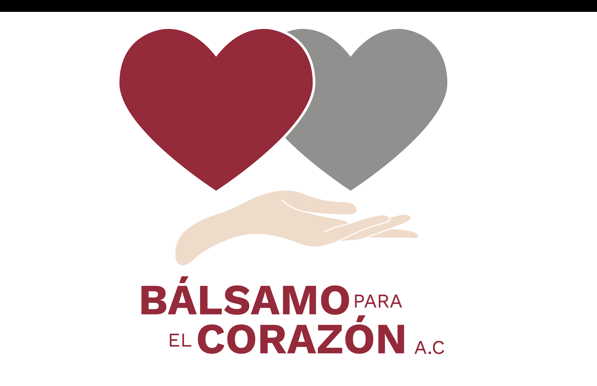

Apoyar desde
el corazón.
Somos una organización, que a través de nuestro apoyo a las personas vulnerables, ofrecemos un bálsamo para el corazón.
Quiénes somos
Somos Bálsamo para el Corazón A.C., una asociación orientada al apoyo de las personas vulnerables.
Somos una organización, que a través de nuestro apoyo a las personas vulnerables, ofrecemos un bálsamo para el corazón.
Ser una Asociación fortalecida a través de redes de apoyo, que permitan la gestión de recursos para atender las necesidades de las personas vulnerables.
Nuestra identidad
Nuestro nombre expresa el sentido de la asociación: ofrecer apoyo a quienes lo necesitan.
